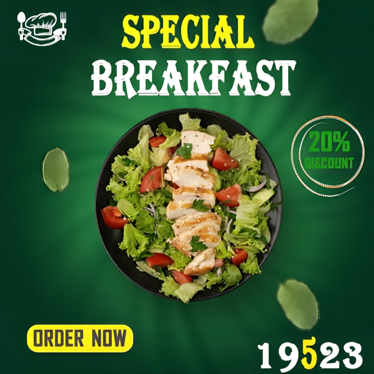
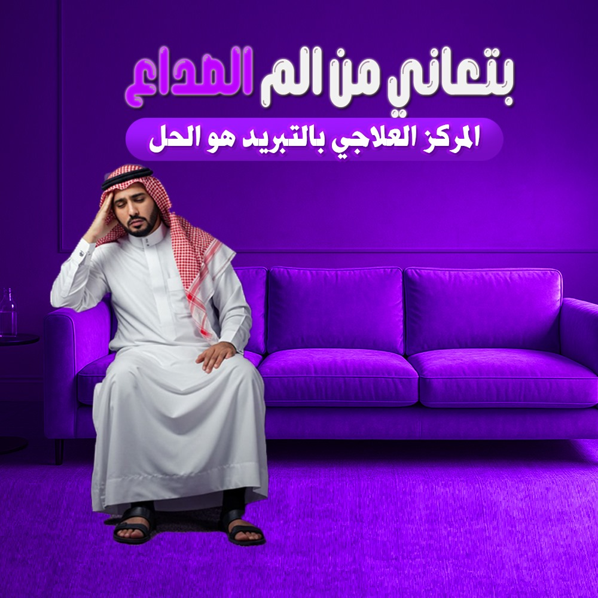

INDEPENDENT DESIGNER / EGYPT AVAILABLE FOR PROJECTS
DESIGN THAT MAKES A MARK
Hussein
Mohamed.
Graphic Designer — Visual Storyteller
حسين محمد — مصمم جرافيك | تصميم هويات بصرية ولوجوهات وسوشيال ميديا
I build distinctive visual identities and digital experiences for brands with something to say.
01 / 04BRANDING · SOCIAL · IDENTITY
HM
CREATIVE
DEPT.
CREATIVE
DEPT.


SELECTED WORKVisuals with a point of view.
GOOD
DESIGN
STICKS
DESIGN
STICKS
SCROLL TO DISCOVER ↓EST. IN CREATIVITY — 2026
WHAT I DO
Good ideas deserve
great design.
From the first sketch to the final pixel, I create work that feels intentional, considered and unmistakably yours.
✳
Social
Media
Campaigns & content↗
02 / SYSTEMS◈
Brand
Identity
Strategy & visual systems↗
03 / SYMBOLS✳
Logo
Design
Marks made to last↗
04 / ALL WORK↗
Selected
Projects
Browse the portfolio↗
A LITTLE ABOUT MY APPROACH
Less decoration.
More intention.
Design is not just how something looks. It’s how clearly it speaks, how confidently it stands out, and how well it stays with you.
Meet the designer ↗HAVE SOMETHING IN MIND?Let’s make it
Let’s make it
memorable.
Tell me what you’re building. We’ll make it look the part.